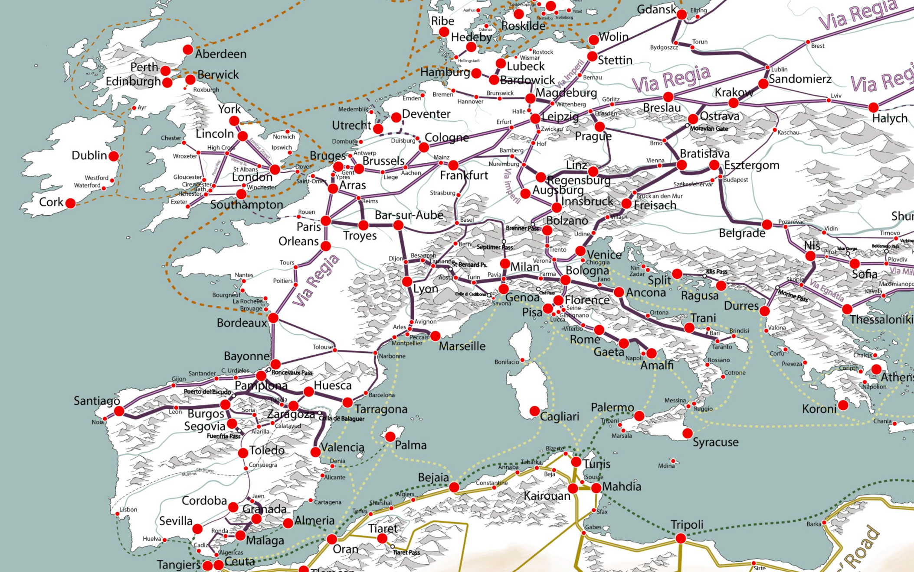
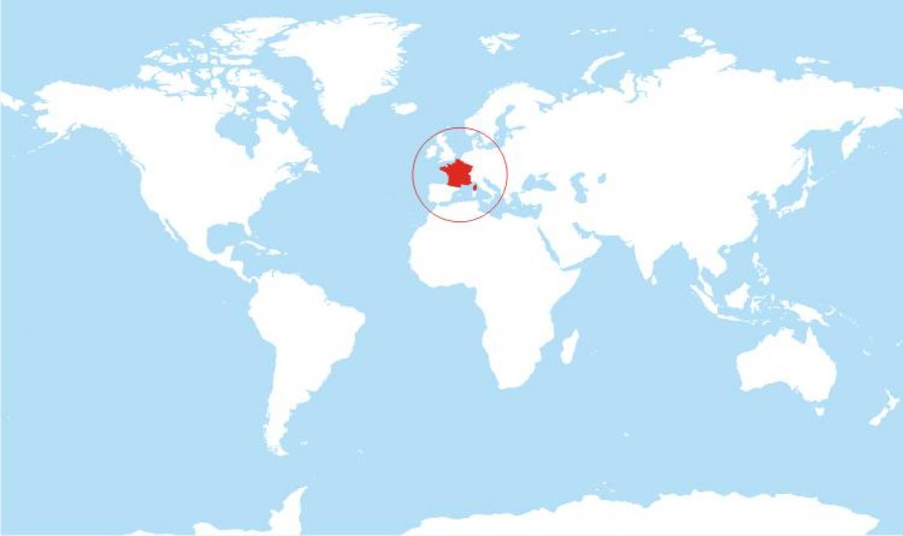
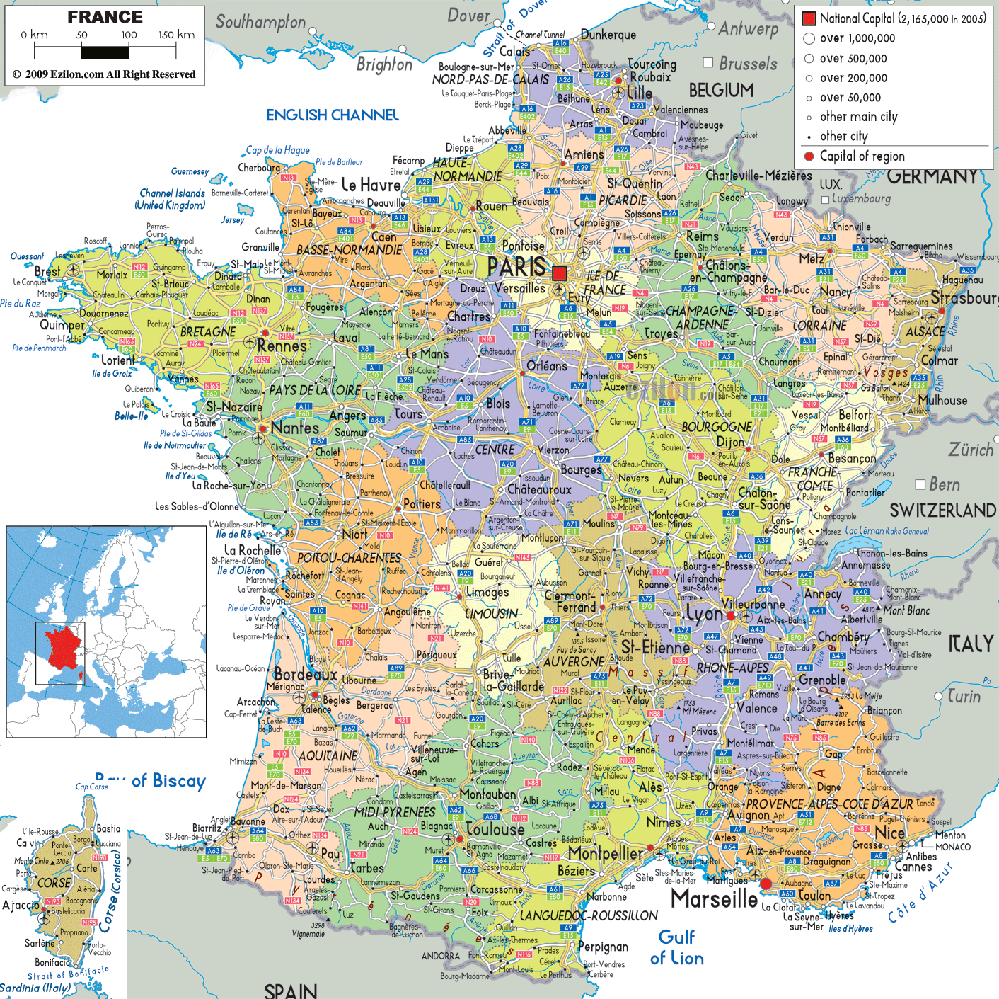
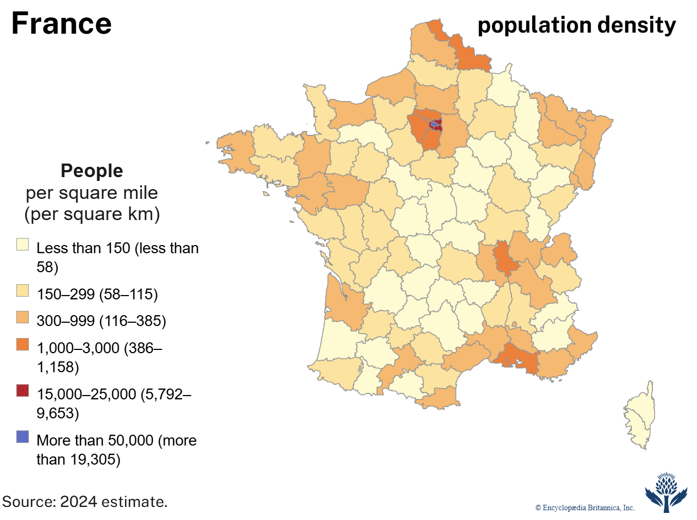

How France has been surveyed, projected, and mapped.
Photo: Ferr Studio / Unsplash
Overview
Below are 5 maps that illustrate different aspects of France's geographical and historical development.
Four Maps of France
01
An Ancient Map — (Roman Gaul Period)
This map, drawn from the Digital Atlas of the Roman Empire, shows the boundaries of Gaul during the height of the Roman Empire.
It reveals how the territory that is now France was organized into Roman administrative regions and connected by roads long before it existed as a unified nation.
It also explains why the archetecture of major cities conatin Roman styles (Åhlfeldt, n.d.).
02
Trade Routes — Medieval Trade Networks

Note. Adapted (cropped) from Medieval trade networks v.4 by MartinMnsson, 2018, Imgur (https://imgur.com/medieval-trade-networks-v-4-MsXaOdV/).
This map shows the medieval trade networks that linked France to the rest of Europe and the Mediterranean.
The full map that this was adapted from shows the critical trade routes across the entire continent until eastern Asia.
It highlights how France's position along major overland and sea routes shaped its economic growth and its exchange of goods
and ideas with other regions and explains why today those cities still have remnants of the trading industry (MartinMnsson, 2018).
03
France on The World Map

This map shows France's position on the world stage, situated in Western Europe with coastlines on the English Channel, the Atlantic Ocean, and the Mediterranean Sea.
It helps place France's continental location and latitudinal range in a global context. Note that this is a mercator projection. (Maps-France.com, n.d.).
04
A Modern Map — France Political Map

This modern political map shows France's current regions, major cities, and national borders.
It reflects the country's present-day administrative divisions rather than historical or physical boundaries.
Note that this map is a mercator projection and could have minor distortions in area and shape. (Ezilon.com, 2009).
05
Modern Population Density

This map shows how France's population is distributed today, with the highest density concentrated around Paris and other major urban centers, while rural regions remain far more sparsely populated.
It adds a human-geography layer to the physical and political maps already covered on this page (Bisson et al., 2026).
Key Questions About France
On which continent and in what general area is France located?
France is located in Western Europe, bordered by several countries including Germany, Belgium, Luxembourg, Switzerland, Italy, Spain, and Monaco.
Additionally it is the only country that has direct water access to the English Channel and the Mediterranean Sea (Bisson et al., 2026).
What is the latitudinal range of France?
France is located between approximately 42°N and 51°N latitude. This places it in the temperate zone of the Northern Hemisphere along with other countries like Austria, Switzerland, and even Canada (Bisson et al., 2026).
During what time periods or years has France existed?
France has existed for over two millennia, with its modern borders largely established during the 19th century. Some famous periods of time that shaped France were the Roman period, the medieval era,
and the modern nation-state period (Bisson et al., 2026).
Are there any famous cartographers from France, or cartographers from other countries who influenced map making in France?
Engraved portrait of Guillaume Delisle (New World Cartographic, 2025).
Yes one notable cartographer from France is Guillaume Delisle. He was born in 1675 to Claude Delisle who originally studied law but then became a cartographer.
Guillaume from a young age was very immersed in cartography which is why he prusued it later for his career.
He was is considered one of the more important cartographers of the 18th century creating very accurate representations in Africa, the Americas, and Europe.
Most sources say that he is the father of scientific cartography as he was one of the first individuals to apply the scientific method and
mathmatical tools to the process of map making (New World Cartographic, 2025).